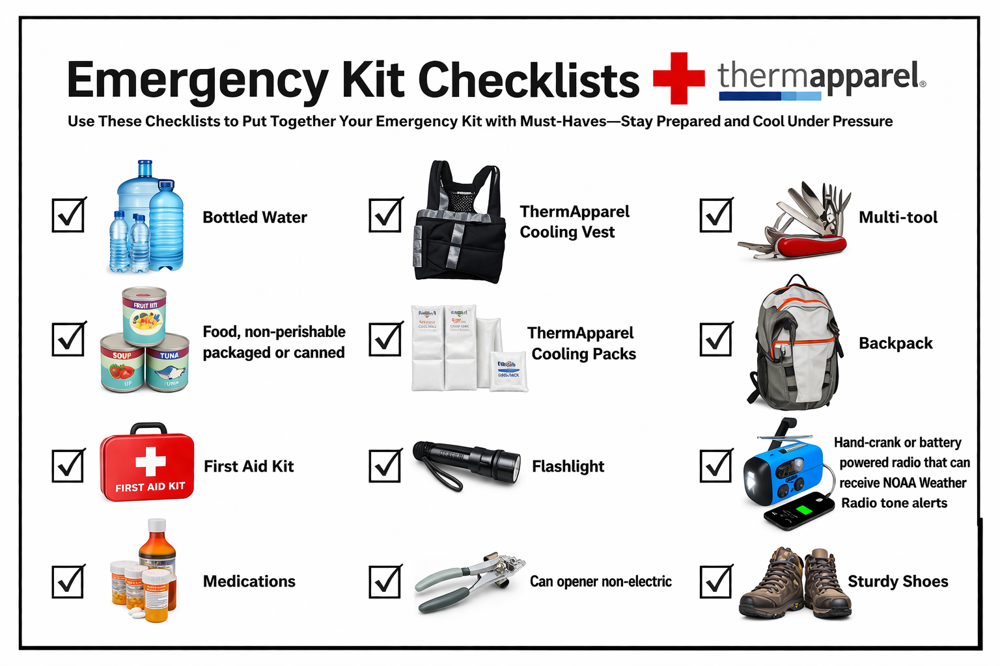

Survival kit adalah perlengkapan penting yang harus disiapkan untuk menghadapi situasi darurat. Isi survival kit meliputi air minum, makanan, obat-obatan, senter, dan perlengkapan penting lainnya. Halaman ini memberikan informasi yang dapat membantu kita memahami pentingnya persiapan serta memberikan rekomendasi barang yang harus dibawa.

src : thermApparel
Air sangat penting untuk bertahan hidup. Digunakan untuk mencegah dehidrasi, terutama saat bantuan belum datang.
Makanan kaleng atau instan yang tidak cepat basi digunakan untuk menjaga energi tubuh selama keadaan darurat.
Berisi perlengkapan medis dasar seperti plester, perban, dan antiseptik untuk menangani luka ringan.
Obat pribadi atau umum (seperti obat demam, alergi) sangat penting untuk menjaga kondisi kesehatan.
Digunakan untuk menjaga suhu tubuh tetap stabil, terutama di kondisi panas ekstrem.
Membantu mendinginkan tubuh atau mengatasi luka tertentu seperti bengkak atau panas.
Digunakan sebagai sumber cahaya saat listrik mati atau kondisi gelap.
Alat manual untuk membuka makanan kaleng.
Alat serbaguna (pisau kecil, obeng, dll) untuk berbagai kebutuhan darurat.
Digunakan untuk menyimpan semua perlengkapan agar mudah dibawa saat evakuasi.
Radio darurat digunakan untuk menerima informasi penting seperti peringatan cuaca atau instruksi evakuasi.
Melindungi kaki saat berjalan di medan berbahaya seperti puing atau air.